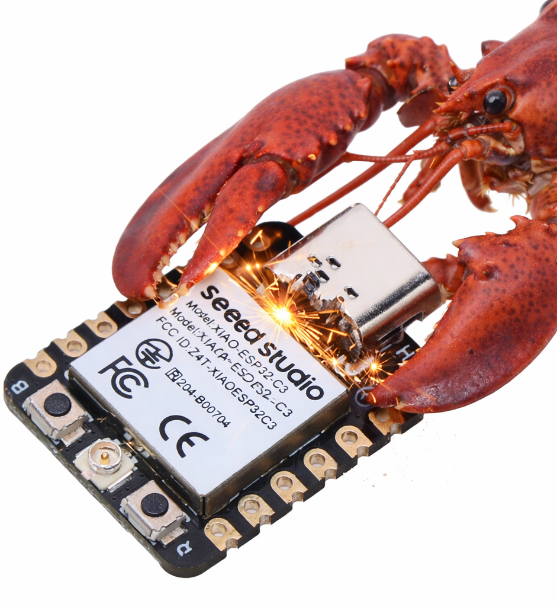

zclaw is an ESP32-resident AI agent written in C. It runs as a practical assistant over Telegram or host relay, with scheduling, GPIO control, memory, and a tight firmware budget.
Enjoy with zclaw
"Remind me in 20 minutes."
"Water the plants every day at 8:15."
"Set GPIO 5 high."
"Remember that my office sensor is on GPIO 4."
You send plain language, zclaw maps to tool calls, firmware executes on silicon.
You: In 20 minutes, check the garage sensor
Agent: Created schedule #7: once in 20 min -> check the garage sensor

Tested targets: ESP32-C3, ESP32-S3, ESP32-C6, ESP32-WROOM. Other ESPs should work fine.
What "888 KiB" Means
The 888 KiB target is an all-in firmware cap, not just zclaw application logic. It includes app code plus ESP-IDF/FreeRTOS runtime, Wi-Fi/networking, TLS/crypto, and cert bundle overhead.
Current default esp32 build (grouped image bytes from idf.py -B build size-components):
Layer
Size
Share
zclaw app logic (libmain.a)
39,276 bytes (~38.4 KiB)
~4.6%
Wi-Fi + networking stack
378,624 bytes (~369.8 KiB)
~44.4%
TLS/crypto stack
134,923 bytes (~131.8 KiB)
~15.8%
Cert bundle + app metadata
98,425 bytes (~96.1 KiB)
~11.5%
Other ESP-IDF/runtime/drivers/libc
201,786 bytes (~197.1 KiB)
~23.7%
Total image size from this build is 853,034 bytes; padded zclaw.bin is 853,184 bytes (~833.2 KiB), leaving 56,128 bytes (~54.8 KiB) under the 888 KiB cap.